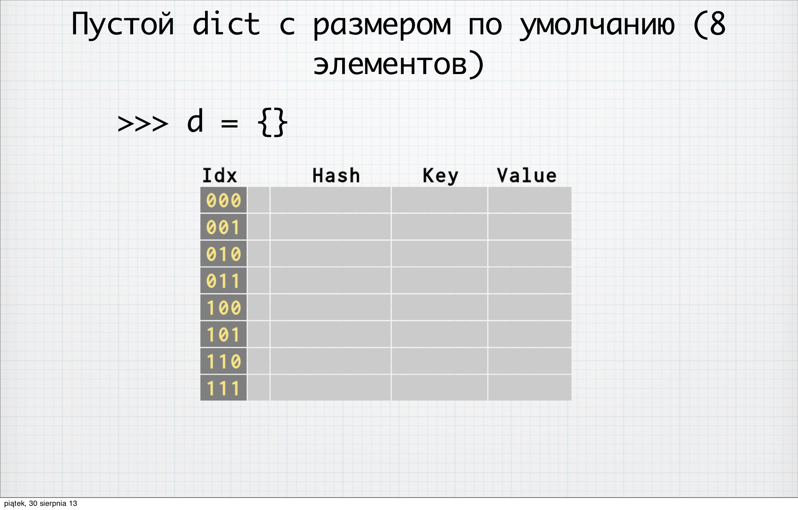
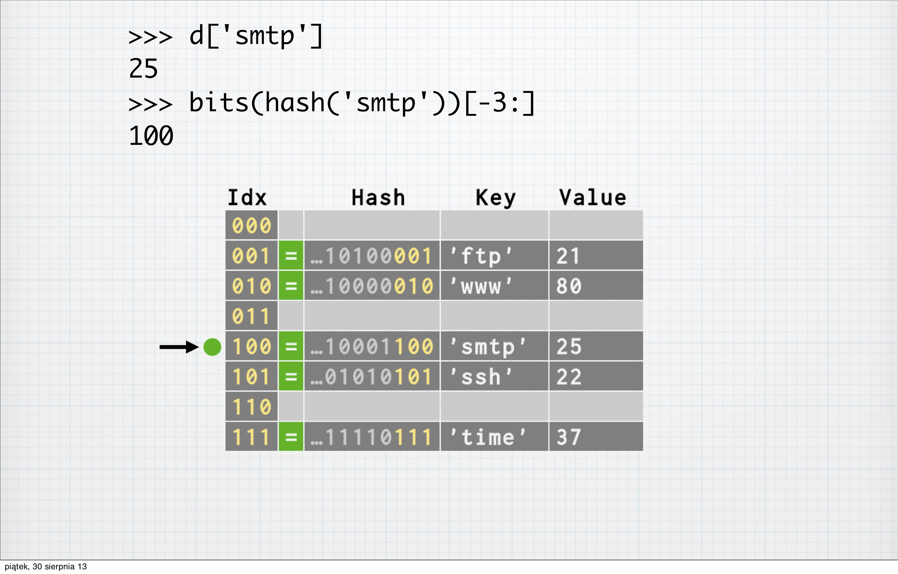
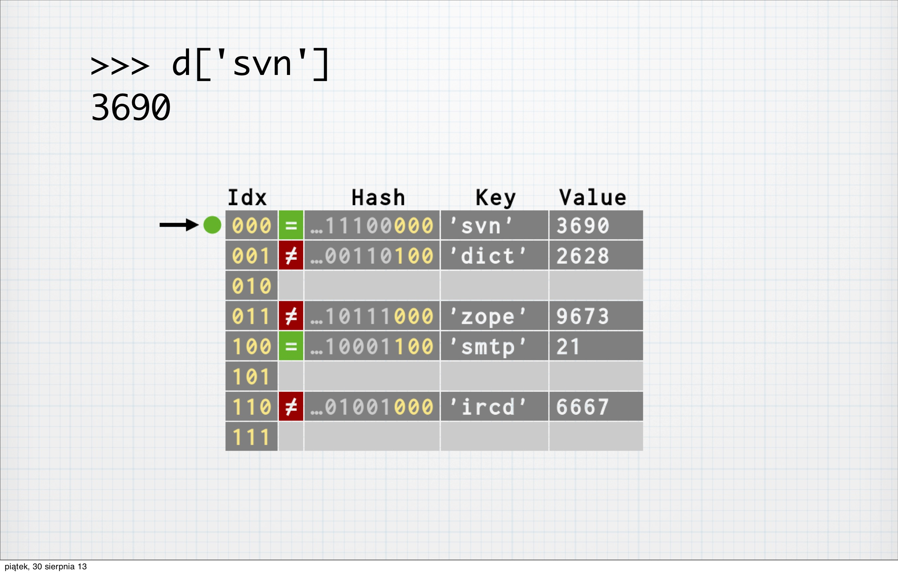
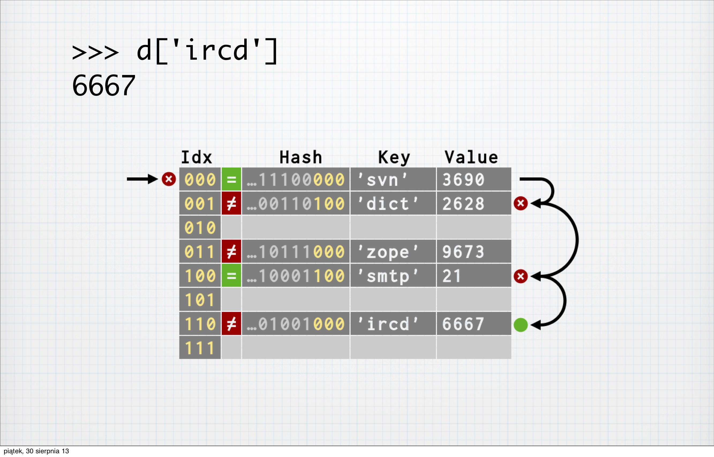

Начиная с версии Python 3.3 с интерпретатором поставляется специальный launcher, который позволяет выбрать запускаемую версию интерпретатора.
Для корректной работы launcher, вы должны быть уверены, что путь к нему прописан в переменной окружения PATH.
Если вы выполните в консоли:
py
Скрипту можно указать, какую конкретную версию нужно запустить:
py -2.7
py -3
_pth;lib, извлекаем туда содержимое файла <версия_python>.zip и
удаляем этот архив;Данный мануал актуален для компьютеров на основе чипа Apple Silicone. В целом его можно применять и для компьютеров на intel, но не с небольшими доработками.
Устанавливаем brew. Выполнять обе команды требуется для возможности устанавливать как нативно поддерживаемые приложения, так и те, которые будут работать через прослойку совместимости.
Устанавливает brew для архитектуры x86
arch -x86_64 /bin/bash -c "$(curl -fsSL https://raw.githubusercontent.com/Homebrew/install/HEAD/install.sh)"
Устанавливает brew для apple silicone
arch -arm64 /bin/bash -c "$(curl -fsSL https://raw.githubusercontent.com/Homebrew/install/HEAD/install.sh)"
После установки brew для m1 будет установлен в /opt/homebrew/bin/brew, а для intel /usr/local/bin/brew
Добавляем в ~/.zshrc и переоткрываем консоль, чтобы настройки применились
# brew
if [[ $(arch) == 'arm64' ]]; then
eval "$(/opt/homebrew/bin/brew shellenv)"
else
eval "$(/usr/local/bin/brew shellenv)"
fi
export HOMEBREW_NO_ANALYTICS=1
# Poetry
export PATH="$HOME/.poetryenv/1.7.1:$PATH"
poetry completions zsh > ~/.zsh/_poetry
# Pyenv
export PYENV_ROOT="$HOME/.pyenv"
export PATH="$PYENV_ROOT/bin:$PATH"
eval "$(pyenv init --path)"
# direnv
eval "$(direnv hook zsh)"
# Включает погрузку скриптов реализующих автодополнение в консоли
zstyle ':completion:*:*:git:*' script ~/.zsh/git-completion.bash
fpath=(~/.zsh $fpath)
autoload -Uz compinit && compinit
source <(kubectl completion zsh)
# Генерирует флаги необходимые для сборки из исходников сишных библиотек
export LDFLAGS=""
export CPPFLAGS=""
export PKG_CONFIG_PATH=""
pkgs=(curl readline sqlite)
for pkg in $pkgs; do
pkg_dir="$HOMEBREW_PREFIX/opt/$pkg"
lib_dir="$pkg_dir/lib"
if [ -d "$lib_dir" ]; then
export LDFLAGS="$LDFLAGS -L$lib_dir"
fi
include_dir="$pkg_dir/include"
if [ -d "$include_dir" ]; then
export CPPFLAGS="$CPPFLAGS -I$include_dir"
fi
pkg_config_dir="$lib_dir/pkgconfig"
if [ -d "$pkg_config_dir" ]; then
if [ "x$PKG_CONFIG_PATH" = "x" ]; then
export PKG_CONFIG_PATH="$pkg_config_dir"
else
export PKG_CONFIG_PATH="PKG_CONFIG_PATH:$pkg_config_dir"
fi
fi
done
Открываем консоль для работы с ПО адаптированным под Apple Silicon, чтобы у нас использовалась правильная версия brew и зависимости установились правильно.
arch -arm64 zsh
P.S. Вы всегда должны загружать оболочку (zsh) для той архитектуры, с ПО для которой вы собираетесь работать.
Если так не делать и просто перед вызовом программы указывать требуемую архитектуру через arch, то вы можете
получить большие проблемы, так как у вас будут загружены переменные окружения указывающие не на те версии программ.
Устанавливаем полезные утилиты необходимые для работы
brew install wget direnv bash-completion mc xz
curl https://pyenv.run | bash
curl -sSL https://raw.githubusercontent.com/aleksey925/poetryenv/master/src/poetryenv.sh -o ~/poetryenv && bash ~/poetryenv self-install
Устанавливаем docker
brew install --cask docker
Устанавливаем poetry
poetryenv install --python 3.12.1 --poetry 1.7.1
poetry config virtualenvs.create false
Копируем подсказки для автодоплнения
mkdir -p ~/.zsh && cd ~/.zsh
curl -o git-completion.bash https://raw.githubusercontent.com/git/git/master/contrib/completion/git-completion.bash
curl -o _git https://raw.githubusercontent.com/git/git/master/contrib/completion/git-completion.zsh
ln -s /Applications/Docker.app/Contents/Resources/etc/docker.zsh-completion ~/.zsh/_docker
ln -s /Applications/Docker.app/Contents/Resources/etc/docker-compose.zsh-completion ~/.zsh/_docker_compose
Устанавливаем через pyenv нужную версию python
pyenv install 3.12.1
Иногда можно сталкнуться с неожиданной ошибкой при использовании функции strptime, которая заключается в том, что при парсиге строки содержащей в себе временную зону отличную от установленной сейчас на ПК, возникнет ошибка:
ValueError: time data 'Sat Mar 21 00:00:00 MSK 2015' does not match format '%a %b %d %H:%M:%S %Z %Y'
Избежать этого можно вот так:
import os
import time
os.environ['TZ'] = 'Europe/Moscow'
print(time.strptime('Sat Mar 21 00:00:00 MSK 2015', '%a %b %d %H:%M:%S %Z %Y'))
Иногда бывают ситуации, когда необходимо использовать большое количество
вложенных конструкций with или в одной кострукции with необходимо работать с
несколькими объектами. И в этих случаях, код становится некрасивым, ухудшается
его читаемость, а количество симвлов в строке переваливает далеко за 80.
Эта ситуация неприятная и ее хочется как-то решить. К счатью, в стандартной
библиотеке есть класс contextlib.ExitStack, который решает описанную выше
проблему.
Для того, чтобы показать как работать с ним, предположим, что у нас есть 2 класса: Foo и Spam.
class Foo:
def __enter__(self):
print('enter Foo')
return self
def __exit__(self, exc_type, exc_val, exc_tb):
print('exit Foo')
def work(self):
print('work Foo')
class Spam:
def __enter__(self):
print('enter Spam')
return self
def __exit__(self, exc_type, exc_val, exc_tb):
print('exit Spam')
def work(self):
print('work Spam')
При классическом подходе работа с ними будет выглядеть так:
with Foo() as foo, Spam() as spam:
foo.work()
spam.work()
Но, при использовании ExitStack, код выше можно переписать следующим образом:
import contextlib
with contextlib.ExitStack() as stack:
foo = stack.enter_context(Foo())
spam = stack.enter_context(Spam())
foo.work()
spam.work()
Чаще всего, проблема с большим количеством вложенных with встречается при работе c асинхронным кодом. По этому, для работы с асинхронными менеджерами контекста есть специальный класс, который назвается
contextlib.AsyncExitStack.
Полезные ссылки:
Реализация строкового типа в CPython, копия
Для того, чтобы вычислить сколько байтов занимает строка нужно:
text = 'Какая-то строка'
print(len(text.encode('utf8')))
Реализация целого типа в CPython, копия
В python кортежи имеют такую же реализацию как и списки, но с дополнительными оптимизациями. Оптимизации основаны на том, что кортежи являются не изменяемым типом данных и имеют фиксированный размер.
Во первых, нельзя создать несколько разных объектов содержащих пустой кортеж. Python однажды создает объект содержащий пустой кортеж и потом использует его на всем протяжении жизни программы.
Далее, чтобы избежать постоянного выделения памяти под маленькие кортежи.
Python может переиспользовать созданные ранее, которые больше не
используются в программе и имеют "малый" размер. Определение размера
производится на основании константы PyTuple_MAXSAVESIZE. Таким образом все
кортежи чья длинна не превышает значение константы PyTuple_MAXSAVESIZE
могут быть сохранены в специальный список и потом переиспользованы.
Сам список хранящий объекты кортежей для повторого использования представляет
из себя массив, который имеет длинну PyTuple_MAXSAVESIZE, где каждый n-й
элемент массва указывает либо на NULL (если нет кортежей размера n, которые
можно переиспользовать), либо на кортеж размеро n, который можно
переиспользовать. Если имеется несколько кортежей одинаковой длинны, которые
могут быть переиспользованы, то они объединяются в связанный список.
Для того, чтобы гарантировать, что не будет сохранено слишком много объектов и
они не займут всю память, существует вторая константа PyTuple_MAXFREELIST,
которая контролирует максимальную длинну любого из этих связанных списков, в
любом элементе массива. Так же есть ещё один массив размера
PyTuple_MAXSAVESIZE, который хранит длинну связанных списков состоящих из
кортежей. Это необходимо для контроля заданных ограничений.
Использованные материалы: - Understanding Python's underlying data structures - How is tuple implemented in CPython?
В Python списки реализованы как массив хранящий ссылки на объекты типа
PyObject. Такая реализация позволяет обращаться к элементу массива по
индексу за констатное время. Увеличение размера массива происходит по
определенному алгоритму (исходный код).
Вот как будет увеличиваться размер массива при последовательном добавлении в
него новых элементов: 0, 4, 8, 16, 25, 46, 58, 72, 88, and etc.
Использование источники:
Свернуть список можно банально использовав цикл:
numbers = ['1', '2', '3', '11']
result = 1
for number in numbers:
result += number
или можно красиво сделать все это в 1 строчку с помощью функции reduce
from functools import reduce
a = ['1', '2', '3', '11']
print(reduce(lambda x1, x2: x1 + ', ' + x2, a))
или
a = ['1', '2', '3', '11']
', '.join(a)
Развернуть список можно 2 способами:
print(reversed([1, 2, 3, 4, 5]))
или
print([1, 2, 3, 4, 5][::-1])
Очень часто, надо получить не один какой-то элемент, а некоторый их набор ограниченный определенными простыми правилами — например первые 5 или последние три, или каждый второй элемент — в таких задачах, вместо перебора в цикле намного удобнее использовать так называемый срез (slice, slicing).
Следует помнить, что взяв элемент по индексу или срезом (slice) мы не как не меняем исходную коллекцию, мы просто скопировали ее часть для дальнейшего использования (например добавления в другую коллекцию, вывода на печать, каких-то вычислений). Поскольку сама коллекция не меняется — это применимо как к изменяемым (список) так и к неизменяемым (строка, кортеж) последовательностям.
Синтаксис среза похож на таковой для индексации, но в квадратных скобках вместо одного значения указывается 2-3 через двоеточие:
# старт, стоп и шаг
my_collection[start:stop:step]
Особенности работы со срезами
Именованные срезы
Чтобы избавится от «магических констант», особенно в случае, когда один и тот же срез надо применять многократно, можно задать константы с именованными срезами с пользованием специальной функции slice().
Примечание: Nonе соответствует опущенному значению по-умолчанию. То есть [:2] становится slice(None, 2), а [1::2] становится slice(1, None, 2).
# задаем константам именованные срезы
>>> NAME, BIRTHDAY = slice(None, 2), slice(2, None)
>>> person = ('Alex', 'Smith', "May", 10, 1980)
>>> person[NAME]
('Alex', 'Smith')
>>> person[BIRTHDAY]
('May', 10, 1980)
Изменнеие списка срезом
Добавление элементов:
>>> a = [1, 2, 3, 4, 5]
>>> a[1:1] = ['доп. элемент1', 'доп. элемент2']
>>> a
[1, 'доп. элемент1', 'доп. Элемент2', 2, 3, 4, 5]
Замена элементов:
>>> a = [1, 2, 3, 4, 5]
>>> a[2:] = [10, 15, 20]
>>> a
[1, 2, 10, 15, 20]
Удаление элементов:
>>> a = [1, 2, 3, 4, 5]
>>> a[2:] = []
>>> a
[1, 2]
Актуально для python 3.5 и ниже
Словари - это неупорядоченные коллекции произвольных объектов с доступом по ключу. Их иногда ещё называют ассоциативными массивами или хеш-таблицами.
Перед тем как реализовывать словари в python, разработчики интепретатора проанализировали для чего они чаще всего используются в интерпретаторе и не только.
Ниже представлена статистика, которую они собрали:
__dict__) has_key() и __contains__Примеры
Удаление дубликатов
dict.fromkeys(seqn).keys()
Все опреации записи выполняются при конструировании.
Подсчет элементов в последовательности
for i in seq:
d[i] = d.get(i, 0) + 1
Выполняется 2 последовательных доступа по ключу и используя метод get мы не можем уменьшить количество выполняемых операций.
Создание индекса из словаря списков
for page_index, page in enumerate(pages):
for word in page:
d.setdefault(word, []).append(page_index)
setdefault сомещает 2 поиска в одном (в отличии от get).
Как видно из статистики, разработки интерпретатора рассмотрели множество вариантов в которых могут использоваться словари и постарались сделать максимально универсальную реализацию, оптимизации специфических случаев практически не делались.
Внутренняя реализация в python 2.7
Расматривается реализация словарей из python 2.7, потому что она достаточно проста для понимания и отличий от реализации в python 3.3 не так много.
Словарь это просто последовательная область памяти (массив). Для реализации был выбран массив, потому что доступ к его элементам максимально быстрый. В Си коде массив выглядит как массив содержаший струкртуры вида:
typedef struct {
Py_hash_t me_hash;
PyObject *me_key;
PyObject *me_value;
} PyDictKeyEntry;
Описание полей стуктуры:
Легко прикинуть сколько данная структура занимает в места в пяти. Хэш занимает 32/64 бита (в зависимости от разрядности). То есть на 32 битной системе такая стуктура будет занимать 12 байт.
Новый словарь в памяти выглядит следующим образом

Колонка Idx явно не присутвует и нужна только для удобства восприятия.
При инициадизации словаря (python 2.7 и 3.3) в нем сразу выделяется место для 8 значений, это делается для оптимизации. Интересно отметить, что хоть место и выделено для 8 значений, но 8 элементов в нем храниться не может (это будет объяснено далее).
В словаре в качестве ключа может выступать любой НЕ изменяемый объект (строка,
кортеж, frozen set и т д), в том чисте и кастомный объект в котором
переопределен метод __hash__.
Добавление нового элемента в словарь
Для того, чтобы добавить новый элемент в словарь нужно преобразовать ключ в индекс массива (таблицы). Это делается следующим образом:
Полученное значение и есть необходимый нам индекс массива.
Особенность массива (таблицы) в том, что ее размер это всегда степень двойки, по этому n бит всегда будет валидным ключом, где n это степень двойки.
Немного подробностей о работе функции hash.
Функция hash это просто builtin функция возвращающая 32/64 битное значение.
Для вычисления возвращаемого значения используется системная функция, либо
метод __hash__, если он переопределен.
Генерируемый хеш должен обладать следующими свойствами:
Теперь рассмотрим на примерах как происходит добавление новых элементов в словарь:
Функция bits это не какая-то стандартная функция, она просто выводит бинарное представление числа, в данном примере используется только для визуализации.
Ещё необходимо понимать, что в действительности в таблице хранится указатель на объект python`а, а не как изображено.
На данных слайдах изображен идеальный случай заполнения словаря, потому что у нас не возникло коллизий (не было ситуаций, когда для разных значений вычисленный хэш был одинаковым).
Поиск значений в словаре
На данный момент у нас есть заполненный словарь и мы хотим извлечь из него интересующие нас значения. Рассмотрим как это реализуется:
Если визуализировать, то выглядит это следующим образом:

Перебор всех элементов словаря
Получение всех элементов словаря: при итерировании, получение ключей keys()
или получении значений values(), реализуется как последовательный перебор
всех элементов таблицы, где пустые элементы пропускаются. Таким образом
если распечатать словарь, то элементы в нем будут расположены в том порядке, в
котором они лежат в памяти. Это совсем не тот порядок, в котором происходило
добавление элементов в словарь.
Коллизии
Во всех предыдущих примерах, когда мы наблюдали за добавлением новых элементов в словарь, рассматривался идеализированный случай, потому что при добавлении новых элементов ни когда не возникало коллизий.
Коллизия - это ситуация, когда при вычислении индекса таблицы, для двух разных ключей будет будет сгенерирован одинаковый индекс.
Примером может служить ситуация, когда хэш от двух разных ключей одинаковый.
Причиной этого является особенность реализации функции hash, так как она
расчиана на скорость, а не криптостойкость, а также то, что при вычислении
индекса берется только n младших бит хэша.
Есть несколько способов как действовать при возникновении коллизии, в python используется метод "Открытой адресации". Его суть заключается в том, что после возникновения коллизии мы находим в таблице первое свободное место после занятой ячейки и записываем элемент туда. Важно заметить, что вычисление индекса следующей свободной ячейки происходит не при помощи увеличения текущего индекса на единицу. Как это делается будет рассмотрено позже, сейчас рассмотрим как в общих чертах работает алгоритм "Открытой адресации".
На слайдах выше видно, как происходило добавление новых элементов, как разрешались коллизии (элементы, при добавлении которых произошла коллизия отмечены красным перечеркнутым равенством). Как можно заметить у элементов при добавлении, которых произошла коллизия 3 младшие бита хэша не совпадают с индексом ячейки в которой они хранится. Эта информация будет использоваться в дальнешем при поиске элементов по ключу.
Алгоритм поиска первой свободной ячейки
Как говорилось ранее, алгоритм поиска первой свободной ячейки не просто увеличивает текущий индекс на единицу. Это связано с тем, что последовательный поиск очень не оптимален, если ключами словаря служат числа. Дело в том, что хэш от числа это само число (если число больше 32 битов, на 32 битной системе, то просто отбрасываются старшие биты). А на практике довольно часто встречаются словари, в которых ключи это последовательные числа. Соотвественно, если бы алгоритм поиска свободной ячейки просто увеличивал индекс на единицу, то при добавлении в такой словарь нового элемента, ключ у которого строка и ее хэш попадал бы на начало последовательности, то нам бы пришлось пройти всю таблицу, чтобы найти первую свободную ячейку.
Для того, чтобы избежать такой ситуации была выбран следующий алгоритм:
# pertrurb нужен для того, чтобы сделать генерируемое значение более случайным
pertrurb = hash
while (<слот занят>) {
perturb >>= 5;
# slot хранит предыдущие значение
slot = (5 * slot) + 1 + perturb;
}
Если вызывать данный аглоритм 2 в 32 степени раз, то он сгенерирует последвательность всех int`отв, только они будут не отсортированы.
Получение значений по ключу
Пример получения значения по ключу, простой случай:

В простом случае получение значения по ключу происходит по стандароному алгоритму:
В сложном случае мы можем столкнуться с коллизией:

В этом случае алгоритм будет следующий:
TODO дописать https://www.youtube.com/watch?v=JhixzgVpmdM 20:55
Данная заметка основана на докладе Кирилла Лашкевича Dictionary в Python. Кирилл Лашкевич - Python Meetup 30.08.2013, (Локальная копия)
Материалы по данной теме:
Python 3.6 и выше
Начиная с python 3.6 реализация словарей была изменена. Давайте рассмотрим реализаю современных словарей.
До версии 3.6 все данные хранились в одном достаточно сильно разряженом массиве (прочитать деталии реализации можно в начале статьи), а начиная с версии 3.6 для хранения данных решено было использовать 2 массива:
PyDictKeyEntry
typedef struct {
Py_hash_t me_hash;
PyObject *me_key;
PyObject *me_value;
} PyDictKeyEntry;
Рассмотрим пример написанный на python. Для визуализации возьмем следующий словарь:
d = {'timmy': 'red', 'barry': 'green', 'guido': 'blue'}
До версии 3.6 данные такого словаря хранились вот так:
entries = [['--', '--', '--'],
[-8522787127447073495, 'barry', 'green'],
['--', '--', '--'],
['--', '--', '--'],
['--', '--', '--'],
[-9092791511155847987, 'timmy', 'red'],
['--', '--', '--'],
[-6480567542315338377, 'guido', 'blue']]
А начиная с версии 3.6 и выше:
indices = [None, 1, None, None, None, 0, None, 2]
entries = [[-9092791511155847987, 'timmy', 'red'],
[-8522787127447073495, 'barry', 'green'],
[-6480567542315338377, 'guido', 'blue']]
Как мы видим из данного примера изменился только способ хранения данных и он ни как не влияет на алгоритмы работы заложеные в раннюю реализацию словарей.
Материалы по данной теме:
При открытие файла лучше всего всегда явно указывать его кодировку. В python3 это делается это вот-так:
file = open('Титульник.txt', encoding='utf-8')
В python2, нужно использовать функцию open из модуля codecs:
import codecs
codecs.open('Титульник.txt', encoding='utf-8')
Чтобы работать с файлом в кодировке utf8-bom, его нужно открывать следующим образом:
python3
inp = open('test', encoding='utf-8-sig')
python2
import codecs
inp = codecs.open('test', encoding='utf-8-sig')
Правильный подход при работе с большими файлами состоит в том, чтобы не
загружать в память файл за раз целиком (например методом readlines()), а
считывать файл постепенно:
read(n) позволяет считать заданное количество байт из файла;readline() считывает за раз только одну строку из файла;В python протоколом итераций называют такое поведение, когда объект реализует
метод __next__ который возврщает при вызове следующие значение, а когда
объекты кончились возбуждает исключение Stoplteration.
Файлы поддерживают итерационный протокол (имееют метод __next__), по этому
правильным вариантом работы с ними будет использование цикла for, так как он
при своей работе вызывает метод объекта __next__, так же он сам перехватывает
исключение Stoplteration.
Пример:
for line in open('file.txt'):
print(line.upper())
Метод __next__ можно вызывать и ручную используя цикл while, но в этом
случае нужно в ручную перехватывать исключение StopIteration.
inp = open('out')
while True:
try:
print(inp.__next__())
except StopIteration:
break
Изменение прав доступа
import os
script_update = '/home/alex/update.sh'
os.chmod(path=script_update, mode=int('700', base=8))
Агрумент mode принимает значение в восьмеричном формате, по этому десятиричное представление нужно преобразовывать, перед передачей функции.
Изменение владельца
import os
script_update = '/home/alex/update.sh'
os.chmod(path=script_update, mode=int('700', base=8))
import math
import itertools
def openfile(filename):
with open(filename) as file_:
for i in file_:
yield i.strip()
def file_split(filename, parts):
"""
Разбивает содержимое файла на несколько итераторов
"""
all_str = sum(1 for i in open(filename, 'r')) # кол-во строк в файле
count = math.ceil(all_str / parts) # размер среза
offset = 0
chunks = [] # Итераторы содержащие разные части файла
for i in range(parts):
file_ = openfile(filename)
chunks.append((itertools.islice(file_, offset, offset + count)))
offset += count
return chunks
Из двух (или более) итерируемых последовательностей можно создать один список, содержащий кортежи из пар элементов этих последовательностей, а недостающие будут заменены None.
В python2, для этого можно использовать стандартную функцию map:
>>> map(None, [1, 2, 3], [1, 2])
[(1, 1), (2, 2), (3, None)]
В python3, нужно использовать функцию zip_longest из модуля itertools:
>>> from itertools import zip_longest
>>> list(zip_longest([1, 2, 3], [1, 2], fillvalue=None))
[(1, 1), (2, 2), (3, None)]
В Python, чтобы перевести число из одной системы счисления в другую не нужно городить свои велосипеды, можно воспользоваться встроенной функцией int.
>>> int("AF", 16)
175
В этом примере мы перевели шестнадцатиричное число в десятичную систему счисления. Для этого мы в качестве 1 аргумента передали в виде строки число в шестнадцатеричной системе счисления и 2 аргументом передали основание системы счисления (Основание системы счисления, показывает сколько цифр и символов применяется для изображения числа. Например в десятичной системе счисления, основание будет 10.).
len - возвращает число элементов в указанном объекте-контейнере.
Для того, чтобы данная функция могла работать с экземлярами классов, которые
разработали вы сами, необходимо реализовать в них метод __len__.
При работе со встроенными типами данных (str, list, bytearray) len возвращает значение поля
ob_sizeC-структурыPyVarObject, которая представляет в памяти любой встроенный объект. Благодя такой реализации, функцияlenочень быстро работает со встроенными типами, так как обращение к полю тратит меньше ресурсов, чем вызов метода.
Функция map применяет функцию к каждому элементу последовательности и возвращает итератор с результатами.
Например, с помощью map можно выполнять преобразования элементов. Перевести все строки в верхний регистр:
>>> list_of_words = ['one', 'two', 'list', '', 'dict']
>>> map(str.upper, list_of_words)
<map object at 0x102378760>
>>> list(map(str.upper, list_of_words))
['ONE', 'TWO', 'LIST', '', 'DICT']
Производительность
Функция map работает в некоторых случаях немного быстрее чем list comprehensions:
alex@macbook PycharmProjects % python3 -m timeit -u nsec -s'xs=range(10)' 'list(map(hex, xs))'
1000000 loops, best of 5: 404 nsec per loop
alex@macbook PycharmProjects % python3 -m timeit -u nsec -s'xs=range(10)' '[hex(x) for x in xs]'
500000 loops, best of 5: 533 nsec per loop
Но не в том случае, если для преобразования последовательности применяется lambda:
alex@macbook PycharmProjects % python3 -m timeit -u nsec -s'xs=range(10)' 'list(map(lambda x: x+2, xs))'
500000 loops, best of 5: 557 nsec per loop
alex@macbook PycharmProjects % python3 -m timeit -u nsec -s'xs=range(10)' '[x+2 for x in xs]'
1000000 loops, best of 5: 350 nsec per loop
P.S. Данные тесты производились на Python 3.9.7, на macbook pro 13 c m1.
Полезные ссылки:
В цикле анонимные функции нужно использовать с осторожностью, потому что они «ленивые». По другому это называется отложенные вычисления.
Отложенные вычисления (англ. lazy evaluation, также ленивые вычисления или нестрогие вычисления) — технология, которая позволяет вам отсрочить вычисление кода до тех пор, пока не понадобится получить результат вычислений.
args = [1, 2, 3]
for i in args:
func = lambda x: x + i # 3
print(func(0)) # 4
funcs = []
for j in args:
funcs.append(lambda x: x + j)
for f in funcs: # 9
print(f(0))
Пояснения:
Вывод
Анонимные функции инициализируется непосредственно в момент их вызова и если значение переменной которая в неё передавалась изменилось, то функция будет инициализированна с тем значением которое в ней записано на момент вызова, а не с тем, какое передавалось в функцию при создании. В приведённом примере выход из цикла происходит, когда j == 3 и получается, что во всех созданных функциях j будет равно 3.
Решение сложившейся проблемы
Описанную выше проблему можно избежать если изменить код и сделать все так:
funcs = []
for i in range(1, 4):
funcs.append(lambda arg1, arg2=i: arg1 + arg2)
for f in funcs:
print(f(1))
Замыкание (англ. closure) — функция первого класса, в теле которой присутствуют ссылки на переменные, объявленные вне тела этой функции в окружающем коде и не являющиеся её параметрами.
Замыкание, также как и экземпляр класса, есть способ представления функциональности и данных, связанных и упакованных вместе.
В жизни то, что описано выше выглядит следующим образом:
>>> def foo(a):
... def bar(b):
... return b * a
... return bar
...
>>> bar = foo(2)
>>> bar(5)
10
>>> bar(10)
20
Как мы видим, функция bar может получать доступ к переменным из области видимости foo, это и называется замыканием.
yield from можно рассматривать с 2 сторон:
Это синтаксический сахар
Реализация без yield from
def generator():
for i in range(10):
yield i
def wrapper():
for i in generator():
yield i
for i in wrapper():
print(i)
Реализация c и спользованием yield from
def generator():
for i in range(10):
yield i
def wrapper():
yield from generator()
for i in wrapper():
print(i)
yield from обеспечивает прозрачный двусторонний канал от вызывающего до субгенератора. Это включает получение данных из и отправку данных в субгенератор.
Чтение данных из генератора используя yield from
def reader():
"""
Генератор, который создает видимость чтения из файла, сокета и т д
"""
for i in range(4):
yield '<< %s' % i
def reader_wrapper(g):
# Ручной обход данных произведенных reader
for v in g:
yield v
wrap = reader_wrapper(reader())
for i in wrap:
print(i)
# Result
<< 0
<< 1
<< 2
<< 3
Вместо ручного обхода данных reader() мы можем просто использовать yield from.
def reader_wrapper(g):
yield from g
Это работает и мы избавились от 1 строки кода.
Отправка данных в генератор (сопрограмма) используя yield from. Часть 1.
Сейчас давайте сделаем, что-нибудь более интересное. Создадим сопрограмму
вызывающую writer, который принимает данные и отправляет их в сокет,
файловый дескриптор и т д.
def writer():
"""
Сопрограмма, которая записывает данные в сокет, файловый дескриптор и т д
"""
while True:
w = (yield)
print('>> ', w)
Теперь главный вопрос как должна выглядеть функция wrapper обрабатывающая
отправку данных writer, так чтобы любые данные прозрачно передавались от
wrapper к writer().
def writer_wrapper(coro):
# Будет описана позже
pass
w = writer()
wrap = writer_wrapper(w)
wrap.send(None) # "prime" the coroutine
for i in range(4):
wrap.send(i)
# Ожидаемый результат
>> 0
>> 1
>> 2
>> 3
Wrapper должен принять отправленные ему данные и так же должен обработать
StopIteration, когда цикл for будет завершен. Очевидно, что просто написать
for x in coro:
yield x
не получится.
Вот версия, которая работает:
def writer_wrapper(coro):
coro.send(None) # prime the coro
while True:
try:
x = (yield) # Получаем значение, которое будем отправлять
coro.send(x) # передаем его для writer
except StopIteration:
pass
Или вместо этого мы можем написать это:
def writer_wrapper(coro):
yield from coro
Так мы сохраним 6 строчек кода, сделаем код более читаемым и это просто работает. Магия!
Отправка данных в генератор (сопрограмма) используя yield from. Часть 2. Обработка ошибок.
Давайте сделаем предыдущий пример немного сложнее. Что если нашему writer нужно
обрабатывать исключения? Давайте скажем writer обрабатывать SpamException и
выводить ***, если оно произошло.
class SpamException(Exception):
pass
def writer():
while True:
try:
w = (yield)
except SpamException:
print('***')
else:
print('>> ', w)
Что если не менять writer_wrapper? Будет это работать? Давайте проверим!
# writer_wrapper такой как выше (длинная версия)
w = writer()
wrap = writer_wrapper(w)
wrap.send(None) # "prime" the coroutine
for i in [0, 1, 2, 'spam', 4]:
if i == 'spam':
wrap.throw(SpamException)
else:
wrap.send(i)
# Ожидаемый результат
>> 0
>> 1
>> 2
***
>> 4
# Полученный результат
>> 0
>> 1
>> 2
Traceback (most recent call last):
... redacted ...
File ... in writer_wrapper
x = (yield)
__main__.SpamException
Не работает, потому что x = (yield) просто возбуждает ошибку и вся программа
аварийно завершается. Давайте заставим программу работать, будем ловить
исключения в writer_wrapper и вручную кидать их в суб-генератор (writer),
а если ошибки не возникает просто передавать значения в суб-генератор.
def writer_wrapper(coro):
"""Works. Manually catches exceptions and throws them"""
coro.send(None) # prime the coro
while True:
try:
try:
x = (yield)
except Exception as e: # This catches the SpamException
coro.throw(e)
else:
coro.send(x)
except StopIteration:
pass
Это работает.
# Результат
>> 0
>> 1
>> 2
***
>> 4
Но и это тоже!
def writer_wrapper(coro):
yield from coro
yield from прозрачно обрабатывает отправку значений или кидает исключения
внутрь суб-генератора.
Хотя это все равно не покрывает все возможные случаи. Что случиться если
генератор будет закрыт (возникает StopItaration)? Что о том случае, если
суб-генератор возвращает значение (в python 3 генератор может возвращать
значение), как оно будет возвращаться? Все случаи, которые может обработать
yield from описаны в PEP 380.
Ссылки: - Оригинальная статья - PEP 380 - Syntax for delegating to a sub-generator - PEP 342 - Coroutines via Enhanced Generators - Dave Beazley's Curious Course on Couroutines данная статья великолепна для начала. Посмотрите слайды 24-33 чтобы увидеть наглядные примеры.
class.__bases__ - вернет кортеж базовых классов объектаobject.__dict__ - возвращает словарь атрибутов объектаДля того, чтобы реализовать у класса доступ по индексу. В нём нужно определить
2 основных метода __getitem__ и __setitem__.
__getitem__ - отвечает за получение данных содержащихся по указанному индексу.
__setitem__ - отвечает за присваивание объекту по индексу.
class Test:
def __init__(self, *args):
self.data = list(args)
def __getitem__(self, item):
"""
Вызывается при доступе к атрибуту класса или по индексу
"""
if isinstance(item, str):
return getattr(self, item)
else:
return self.data[item]
def __setitem__(self, key, value):
"""
Вызывается при присваивании по индексу
"""
self.data[key] = value
test = Test(1, 2)
print('Доступ атрибуту класса', test.data)
print('Доступ по индексу\n', test[1])
test[0] = 11
print('Присвоили данные по индексу', test.data)
test.data = ['новый', 'список']
print('Присвоили данные через атрибут класса', test.data)
Работая с python Вы каждый день сталкиваетесь с необходимостью пробежаться по
всем строкам файла или перебрать все элементы списка, словаря или какой-то
другой коллекции. Наверняка решаете Вы эту задачу простым циклом for.
for i in [1, 2, 3]:
print(i)
Вы можете так делать благодаря тому, что эти объекты реализуют протокол
итераторов. Это значит что они реализуют интерфейс благодаря которому цикл
for знает как их перебрать.
Для того, чтобы класс написаный вами тоже можно было использовать в цикле
for, необходимо переопределить методы: __iter__, __next__.
Метод __iter__ вызывается циклом for в самом начале и возвращает
итератор, при помощи которого можно последовательно перебрать все элементы
контейнера.
Итератор возвращенный методом __iter__ должен реализовывать метод __next__,
который при каждом вызове будет возвращать следующий объект контейнера и так
до тех пор пока элементы не кончатся. Когда элементы кончились он должен
возбудить исключение StopIteration, которое сведетельствует о том, что все
элементы контейнера были перебраны.
Примеры:
class MyList:
def __init__(self, *args):
self.data = args
self.index = 0
def __iter__(self):
"""
Вызывается циклом for, в самом начале, чтобы получить объект,
который реализует метод __next__, чтобы производить его обход.
Так как данный класс реализует метод __next__, данный метод
просто возвращает self.
"""
return self
def __next__(self):
"""
Выдаёт циклу очередной элемент, а когда элементы заканчиваются,
возбуждает исключение StopIteration
"""
try:
data = self.data[self.index]
self.index += 1
except IndexError:
self.index = 0
raise StopIteration
return data
my_list = MyList(0, 1, 2, 3, 4)
for i in my_list:
print(i)
Перебор всех атрибутов класса:
class MyList:
def __init__(self):
self.atr1 = 0
self.atr2 = 1
self.atr3 = 'привет'
self.atr4 = [1, 2, 3]
def __iter__(self):
"""
Вызывается циклом for, в самом начале, чтобы получить объект,
который реализует метод __next__, чтобы производить его обход.
Чтобы выполнять итерации над атрибутами класса используем
метод __dict__, который содержит словарь атрибутов класса.
Функция iter добавляет в объект метод __next__, для
поддержки итераций.
"""
return iter(self.__dict__.values())
my_list = MyList()
for i in my_list:
print(i)
__getattr__ от __getatrribute____getattr__
Вызывается в тех случая, когда у класса пытаются запросить атрибут, который не определен ещё. По этому мы можем переопределить его и указать классу, что делать при доступе к несуществующему атрибуту.
>>> class Foo:
... some = 1
... def __getattr__(self, item):
... print('Атрибута "{}" не существует'.format(item))
...
>>> foo = Foo()
>>> foo.some
1
>>> foo.some1
Атрибута "some1" не существует
__getattribute__
Вызывается при попытке доступа к атрибутам (существующим/не существующим).
>>> class Foo:
... some = 1
... def __getattribute__(self, item):
... print('Обращение к атрибуту "{}"'.format(item))
...
>>> foo = Foo()
>>> foo.some
Обращение к атрибуту "some"
>>> foo.some1
Обращение к атрибуту "some1"
Если в классе одновременно определены оба эти метода, то __getattr__ больше
не будет вызываться. Вместо него будет использоваться __getattribute__.
Иногда бывает нужно получить в виде строки полный traceback ошибки, это можно сделать следующим способом:
import traceback
def foo():
a = 5 / 0
try:
foo()
except Exception as err:
print(traceback.format_exc())
Пример ниже показывает как можно залогировать не перехваченные исключения.
import sys
import logging
def unhandled_exception_hook(exc_type, exc_value, exc_traceback):
logging.getLogger('app-name').error(
'#CRITICAL Возникла непредвиденная ошибка в работе приложения:',
exc_info=(exc_type, exc_value, exc_traceback)
)
sys.excepthook = unhandled_exception_hook
Цепочки исключений это способ показать, что выбрасываемое исключение является следствием неудачной попытки обработать другое исключение.
Для формирования цепочек исключений используется дополнение from. При его
использовании требуется указать ещё одно исключение (класс, либо объект). Этот
объект будет подвязан к возбуждаемому исключению в атрибут __cause__ (атрибут
поддерживает запись). В результате, если возбуждаемое исключение не обработано,
то на вывод будут отправлены оба исключения:
try:
print(1 / 0)
except ZeroDivisionError as e:
raise RuntimeError('Новое исключение') from e
Данный код говорит о том, что исключение RuntimeError('Новое исключение')
возникло в результате неудачной попытки обработать ZeroDivisionError.
Похожий механизм срабатывает автоматически, если исключение возбуждается
внутри обработчика, либо блока finally — предыдущее исключение подвязывается
в атрибут __context__ нового:
try:
print(1 / 0)
except:
raise RuntimeError('Неявная цепочка исключений')
Для очистки памяти в CPython используется сразу 2 способа:
Алгоритм подсчета ссылок очень простой и эффективный, но у него есть один большой недостаток. Он не умеет определять циклические ссылки. Именно из-за этого, в питоне существует дополнительный сборщик, именуемый поколенческий GC, который следит за объектами с потенциальными циклическими ссылками.
В Python, алгоритм подсчета ссылок является фундаментальным и не может отключен, тогда как GC опционален и может быть отключен.
Подсчет ссылок
Алгоритм подсчета ссылок это одна из самых простых техник для сборки мусора. Объекты удаляются как только на них больше нет ссылок.
В Python, переменные не хранят значения, а выступают в роли ссылок на объекты. То есть когда вы присваивайте значение новой переменной, то сначала создается объект с этим значением, а уже потом переменная начинает ссылаться на него. На один объект может ссылаться множество переменных.
Каждый объект в Python содержит дополнительное поле (счетчик ссылок), в котором хранится количество ссылок на него. Как только кто-то ссылается на объект, это поле увеличивается на единицу. Если по какой-то причине ссылка пропадает, то это поле уменьшается на один.
Примеры, когда количество ссылок увеличивается:
Как только счетчик ссылок для определенного объекта достигает нуля интерпретатор запускает процесс уничтожения объекта. Если удаленный объект содержал ссылки на другие объекты, то эти ссылки также удаляются. Таким образом, удаление одного объекта может повлечь за собой удаление других.
Например, если удаляется список, то счетчик ссылок во всех его элементах уменьшается на один. Если все объекты внутри списка больше нигде не используются, то они также будут удалены.
Переменные, которые объявлены вне функций, классов и блоков называются глобальными. Как правило, жизненный цикл таких переменных равен жизни Python процесса. Таким образом, количество ссылок на объекты на которые ссылаются глобальные переменные никогда не падает до нуля.
Переменные, которые объявлены внутри блока (функции, класса) имеют локальную видимость (т.е. они видны только внутри блока). Как только интерпретатор питона выходит из блока он уничтожает все ссылки созданные локальными переменными внутри него.
Вы всегда можете проверить количество ссылок используя
функцию sys.getrefcount.
Пример работы счетчика ссылок:
>>> import sys
>>> foo = 'Какая-то строка'
>>> print(sys.getrefcount(foo))
2
>>> bar = foo
>>> print(sys.getrefcount(foo))
3
>>> del bar
>>> print(sys.getrefcount(foo))
2
Данный пример наглядно показывает все то, о чем говорилось ранее. Небольшое недоумение может вызвать то, что нам вернулись значения 2, 3, 2, а не 1, 2, 1. Это объясняется тем, что когда переменная передается в функцию, то счетчик ссылок увеличивается на единицу (это сделано для того, чтобы объект не был удален в то время, когда он обрабатывается функцией).
Основная причина, из-за которой стандартный интерпретатор (CPython) использует счетчик ссылок, является исторической. В настоящее время можно встретить множество дебатов по поводу данного подхода. Некоторые люди считают, что сборщик мусора может быть намного эффективней без участия алгоритма подсчета ссылок. У данного алгоритма есть множество проблем, таких как циклические ссылки, блокирование потоков, а также дополнительные накладные расходы на память и cpu.
Основным плюсом этого алгоритма является то, что объекты удаляются сразу как только они не нужны.
Garbage Collector
Задача GC обрабатывать ситуации, когда у нас есть объекты у которых счетчик ссылок не 0, но они более не достижимы из кода. То есть он нужен только для удаления объектов с циклическими ссылками, которые не были удалены алгоритмом работающим по умолчанию и опирающимся на подсчете ссылок.
Ниже приведен пример визуализирующий проблему циклических ссылок, которую решает GC.
import ctypes
import gc
# выключаем GC
gc.disable()
# используется ctypes для доступа к объектам по адресу памяти
class PyObject(ctypes.Structure):
_fields_ = [("refcnt", ctypes.c_long)]
object_1 = {}
object_2 = {}
object_1['obj2'] = object_2
object_2['obj1'] = object_1
obj_address = id(object_1)
# Удаляем ссылки, таким образом объекты более недоступны в программе,
# но счетчик ссылок у них не 0
del object_1, object_2
# раскомментируйте для принудительного запуска gc, чтобы убедится, что он
# удалит недостижимые объекты
# gc.collect()
# проверяем счетчик ссылок
print(PyObject.from_address(obj_address).refcnt)
В примере выше, инструкция del удаляет ссылки на наши объекты (не сами объекты). Как только Python выполняет инструкцию del эти объекты становятся недоступны из Python кода. Однако, с выключенным модулем gc они по прежнему будут оставаться в памяти, т.к. они имели циклические ссылки и их счетчик по прежнему равен единице. Вы можете визуально исследовать такие связи используя библиотеку objgraph.
Циклические ссылки могут происходить только в “контейнерных” объектах. Т.е. в объектах, которые могут хранить другие объекты, например в списках, словарях, классах и кортежах. GC не следит за простыми и неизменяемыми типами, за исключением кортежей. Некоторые кортежи и словари так же исключаются из списка слежки при выполнении определенных условий. Со всеми остальными объектами гарантированно справляется алгоритм подсчета ссылок.
Поколения
Поиск недостижимых из кода программы объектов может занимать очень много времени, по этому все объекты разделяются на 3 поколения (0, 1, 2), чем дольше живет объект, тем в более старшем поколении он будет находится. Поколения представляют из себя обычные списки, с которыми работает gc.
Алгоритм распределения по поколениям:
Момент запуска GC определяется при помощи специальных значений называемых threshold. Для каждого поколения имеется свое знанчение threshold. Посмотреть эти значения можно вот так:
>>> import gc
>>> gc.get_threshold()
(700, 10, 10)
Таким образом GC запускается: - для поколения 0 - когда выполняется следующие условие:
(количесто созданных объектов - количество удаленных объектов) > 700
Значения threshold можно изменять при помощи функции gc.set_threshold.
Ограничения GC
GC не может корректно обрабатывать объекты с переопределенным деструктором
(__del__), потому что он просто не знает в каком порядке их вызывать, чтобы
не наткнуться в очередном деструкторе на вызов уже удаленного объекта. По этому
объекты с переопредленным деструктором, а так же другие объекты, которые gc
не знает как удалить, он помещает в gc.garbage.
Для того, чтобы очистить этот список, нужно перебрать все элементы этого списка
и разорвать все циклические ссылки (gc.get_referrers). После этого данный
список можно очистить и тогда python сам удалит эти объекты основываясь на
посчете ссылок.
P.S. учитывая сложность и множество нюансов работы с __del__, лучше не
использовать их.
Стоить отметить, что данная проблема была решена в Python 3.4 (подробнее в PEP 442)
Советы по оптимизации
Циклы зачастую случаются в реальных задачах, их можно встретить в задачах с графами, связными списками или в структурах данных, где требуется вести учёт отношений между объектами. Если ваша программа имеет высокую нагрузку и требовательна к задержкам, то, по возможности, циклы лучше избегать.
В местах, где вы заведомо используйте циклические ссылки, можно использовать «слабые» ссылки. Слабые ссылке реализованы в модуле weakref и в отличие от обычных ссылок никак не влияют на счётчик ссылок. Если объект со слабой ссылок оказывается удалённым, то вместо него возвращается None.
В некоторых случаях полезно отключить автоматическую сборку модулем gc и вызывать его вручную. Для этого достаточно вызывать gc.disable() и в дальнейшем вызывать gc.collect() вручную.
Материалы используемые для написания заметки:
Не один раз видел, что не все программисты на Python понимают, в каких случаях стоит создавать отдельный процесс, а когда можно обойтись потоком. Да и к тому-же, сейчас многие могут думать, что AsyncIO — самый правильный способ писать веб-приложения. Я попробую объяснить разницу между этими формами многозадачности в Python и когда их лучше применять.
Задачи в компьютере делятся на два вида:
CPU Bound — операции, задействующие центральный процессор. Как правило, это вычисления: работа с матрицами, изображениями, анализ больших массивов данных, вычисление последовательности Фибоначчи или майнинг биткоинов.
I/O Bound — задачи, использующие ввод/вывод: работу с диском или сетью. К таковым относятся веб-сервера или часть веб-приложения, которая принимает запросы от клиентов.
Процессы и потоки
Процесс — программа, которая запущена в данный момент. С точки зрения ОС, процесс — это структура данных, за которой закреплена область памяти и некоторые другие ресурсы, например, открытые им файлы.
Потоки, они же треды или нити — единица исполнения внутри процесса. Часто у процесса один поток, называемый основным, но по желанию, программа может создать любое их количество. При старте потоку не выделяется отдельных ресурсов, вместо этого он использует память и ресурсы породившего его процесса. За счет этого потоки быстро стартуют и останавливаются.
Обеспечением многозадачности занимается планировщик — часть ядра ОС, которая по очереди загружает потоки исполнения в центральный процессор.
На одном ядре процессора в единицу времени выполняется один поток. Он работает до тех пор, пока не израсходует свой квант времени (по умолчанию равен 100 мс) или сам не уступит управление следующему потоку, совершив системный вызов. В Python каждый процесс и поток — это нативный процесс и поток операционной системы, так что, для него эти утверждения так-же верны.
Но в эталонной реализации Python — CPython присутствует печально известный GIL (Global Interpreter Lock), по сути, глобальный семафор, который не дает одновременно работать больше чем одному потоку в рамках процесса интерпретатора.
Несколько фактов о GIL
GIL защищает структуры данных работающего потока от проблем конкурентного доступа. Например, предотвращает состояние гонки при изменении значения счетчика ссылок объекта.
GIL упрощает интеграцию non thread safe библиотек на С. Благодаря GIL у нас так много быстрых модулей и биндингов почти ко всему.
Библиотекам на C доступен механизм управления GIL. Так например NumPy отпускает его на долгих операциях.
Когда поток начинает работу, он выполняет захват GIL. Спустя какое-то время планировщик процессов решает, что текущий поток поработал достаточно, и передает управление следующему потоку. Поток №2 видит, что GIL захвачен, так что он не продолжает работу, а погружает себя в сон, уступая процессор потоку №1.
Но поток не может удерживать GIL бесконечно. До Python 3.3 GIL переключался каждые 100 инструкций машинного кода. В поздних версиях GIL может быть удержан потоком не дольше 5 мс. GIL так-же освобождается, если поток совершает системный вызов, работает с диском или сетью.
По сути, GIL в питоне делает бесполезной идею применять потоки для параллелизма в вычислительных задачах. Они будут работать последовательно даже на многопроцессорной системе. На CPU Bound задачах программа не ускорится, а только замедлится, так как теперь потокам придется делить пополам процессорное время. При этом I/O операции GIL не замедлит, так как перед системным вызовом поток отпускает GIL.
На этой грустной ноте можно придти к выводу, что для распараллеливания задач, которые завязаны на ввод/вывод хватит и тредов. А вот вычислительные задачи следует запускать в отдельных процессах.
Сопрограммы и AsyncIO
Теперь представим, что мы пишем HTTP или WebSocket сервер, который каждое подключение обрабатывает в отдельном потоке.
Здесь вполне можно создать 100, может даже 500 потоков, чтобы обработать нужное количество одновременных соединений. Для коротких запросов это даже будет работать и позволит выдержать нагрузку в 5000 RPS на самом дешевом инстансе в DO за пять баксов — вполне неплохо. Если у вас меньше, возможно здесь и не нужны никакие AsyncIO/Tornado/Twisted.
Но что, если их количество стремится к бесконечности? Скажем, это большой чат с кучей каналов, где количество одновременных участников не ограничено. В такой ситуации создать столько потоков, чтобы хватило каждому пользователю я бы уже не рискнул. И вот почему:
Как говорилось выше, пока GIL захвачен одним потоком, другие работать не будут. Планировщик операционной системы, при этом, о GIL ничего не знает и все равно будет отдавать процессор заблокированный потокам. Такой поток, конечно, увидит что GIL захвачен и сразу же уснет, но на переключение контекста процессора будет тратиться драгоценное время.
Переключение контекста — вообще дорогая для процессора операция, которая требует сброса регистров, кэша и таблицы отображения страниц памяти. Чем больше потоков запущено, тем больше процессор совершает холостых переключений на потоки, заблокированные GIL, прежде чем дойдет до того самого, который этот GIL удерживает. Не очень-то эффективно.
Есть старые добрые сопрограммы — то, что сейчас предлагает AsyncIO и Tornado. Их еще называют корутинами или просто потоками на уровне пользователя. Модная нынче штука, но, далеко не новая, а использовалась еще во времена, когда в ходу были ОС без поддержки многозадачности.
В отличие от потоков, сопрограммы выполняют только полезную работу, а переключение между ними происходит только в тот момент, когда сопрограмма ожидает завершения какой-то внешней операции.
import asyncio
import aiohttp
async def simulate_io():
async with aiohttp.ClientSession() as session:
async with session.get('http://python.org') as resp:
await resp.text()
async def coro(name):
await simulate_io()
print(f'{name}-1')
await simulate_io()
print(f'{name}-2')
async def main():
await asyncio.gather(coro('A'), coro('B'))
loop = asyncio.get_event_loop()
loop.run_until_complete(main())
Результаты получим примерно в таком порядке: A-1 B-1 A-2 B-2. Из примера видно,
что сопрограммы работали по очереди, при этом все происходит в одном потоке.
Когда сопрограмма A вызывает simulate_io(), управление передаётся сопрограмме
B. Она делает тот-же вызов и управление возвращается сопрограмме A, которая
печатает результат, так как I/O для неё уже завершился и переходит ко
следующему вызову simulate_io().
Как и в случае с тредами, асинхронщина бесполезна для вычислений. Тут ситуация даже хуже, так как зависший на вычислениях поток рано или поздно GIL отпустит, а вот блокирующий код в сопрограмме заблокирует весь поток, до тех пор, пока не исполнится весь. В отличии от нативных тредов, у сопрограмм отсутствует прерывание по таймеру. Передача управления следующей сопрограмме происходит вручную, при явном вызове конструкции await (или yield, если используются generator-based корутины). Поэтому важно следить, чтобы в асинхронных программах не было блокирующего кода и использовались только асинхронные вызовы, а все вычисления происходили в отдельных процессах.
def fib(n):
if n <= 2:
return 1
return fib(n - 1) + fib(n - 2)
async def coro(name):
await simulate_io()
print(f'{name}-1')
fib(35) # здесь весь поток блокируется
await simulate_io()
print(f'{name}-2')
Итого
Потоки будут проще, если у вас типичное веб-приложение, которое не зависит от внешних сервисов, и относительно конечное количество клиентов, для которых время ответа будет предсказуемо-коротким.
AsyncIO подойдет, если приложение большую часть времени тратит на чтение/запись данных, а не их обработку. Например, у вас много медленных запросов — вебсокеты, long polling или есть медленные внешние синхронные бекенды, запросы к которым неизвестно когда завершатся.
Ссылки по теме:
Отличие конкуретного подхода от многопоточного, заключается в том, что потоками управляет ОС и она производит их переключение по своему алгоритму, на который нельзя повлиять, а сопрограммами управляет event loop, который производит переключение в "правильный" момент времени, то есть когда для коррутины появилась работа (на пример пришли данные по сети).
Ссылки на использованные материалы:
Алексей Кузьмин (Domclick) - Асинхронное программирование в Python, копия, презентация, скрипты с доклада - хороший доклад рассказывающий о том, как реализована асинхронность в python. Объяснение ведется на примерах, которые показывают как написать асинхронный код не используя библиотеки вроде aiohttp.
Алексей Кузьмин (ДомКлик) - Асинхронность изнутри, копия - продолжение предыдущего доклада, в котором подробно на простых примерах рассказывается, что из себя представляет асинхронный код. Хорошо рассказаны все основы.
Алексей Кладов - async / await (2018) (Computer Science Center), копия
Асинхронный Python-код медленнее обычного кода! Ааа!!1один. Aiohttp VS синхронные фреймворки - Диджитализируй!, копия - автор разбирает один из бенчмарков в котором сравнивается производительность асинхронного и синхронного кода, объясняет почему получились те или иные значения и подробно рассказывает для чего хорош асинхронный код, а для чего синхронный.
Что такое type hints и зачем они нужны?
Подсказки типов/аннотации типов помогают сделать код более явным, улучшить его читаемость и дают возможность выполнять автоматизированную проверку корректности написанного (статический анализ).
Вот простой пример как выглядят аннотации типов.
def add(a: int, b: int) -> int:
return a + b
Найти больше полезных примеров вы можете найти на одной из страниц документации mypy.
Полезные ссылки:
Проблема
Иногда бывает нужно добавить аннотации типов в функцию, которая может работать с любыми типами. На пример она принимает какие-то данные и возвращает их без изменения. Как в таком случае поступить?
Можно попытаться решить это различными способами, например:
Any и поставить возвращаемый тип Any. Это
будет работать, но мы потеряем тип изначальной переменной и инструменты вроде
mypy не смогут помочь найти нам ошибки в нашем коде.from typing import Any
def identity(arg: Any) -> Any:
return arg
def identity_int(arg: int) -> int:
return arg
def identity_str(arg: str) -> str:
return arg
def identity_list_str(arg: list[str]) -> list[str]:
return arg
...
Решение
Нужно использовать дженерик переменную. Дженерик переменные позволяют связать
несколько типов вместе. Вот как вы можете использовать их для аннотирования
функции identity:
from typing import TypeVar
T = TypeVar("T")
def identity(arg: T) -> T:
return arg
Здесь тип возвращаемого значения «связан» с типом параметра, то есть что бы вы ни вложили в функцию, на выходе будет то же самое.
Важно заметить, если вы попытаетесь вернуть из функции, что-то что не связанное с аргументом (даже если эти данные будут того же типа), то это будет ошибкой и mypy будет ругаться на это.
from typing import List, TypeVar
T = TypeVar("T")
def first(container: List[T]) -> T:
print(container)
return "a" # mypy raises: Incompatible return value type (got "str", expected "T")
if __name__ == "__main__":
list_one: List[str] = ["a", "b", "c"]
print(first(list_one))
Ограничение возможных типов
TypeVar позволяет вам ограничить возможные типы данных, которые могут быть переданы в нашу функцию. Это полезно, если мы хотим "подсветить", что наша функция умеет работать только с ограниченным количеством данных.
from typing import TypeVar
AnyString = TypeVar("AnyString", str, bytes)
def triple(string: AnyString) -> AnyString:
return string * 3
unicode_scream = triple("A") + "!"
bytes_scream = triple(b"A") + b"!"
Другой способ ограничения возможных типов заключается в определении "верхней границы":
T = TypeVar("T", bound=int)
Это значит, что данная дженерик переменная сможет быть только int или подклассом int.
В случае, когда вам нужно описать, что параметр функции может иметь несколько типов.
Более правильно будет использовать дженерик переменную с описанием constrainst,
а не Union[str, bytes]. Так как при использовании Union инструмент анализирующих
type hints явно не поймет, связь между переданным в функцию параметром и возвращаемым
результатом и нам придется писать много много условий с isinstance() или type(),
чтобы проверить тип переменной и быть уверенным в корректности написанного кода.
Использование дженерик переменной в качестве параметра
from typing import TypeVar
T = TypeVar("T")
def first(container: list[T]) -> T:
return container[0]
if __name__ == "__main__":
list_one: List[str] = ["a", "b", "c"]
print(first(list_one))
Полезные ссылки:
TypeVars explained - первоисточникДженерик типы можно использовать не только с функциями и методами. Их можно использовать также и при определении классов. В этом случае дженерик типы будут указывать с каким типом/типами будет работать тот или иной экземпляр класса.
Перед тем как перейти к описанию собственно класса важно заметить, что большинство типов контейнеров в python универсальные и можно определить какого типа будет содержимое.
list_one: list[str] = ["a", "b", "c"]
print(list_one)
list_two: list[int] = [1, 2, 3]
print(list_two)
dict_one: dict[str, int] = {"one": 1, "two": 2}
print(dict_one)
Создание своего дженерик типа
from typing import Generic, TypeVar
T = TypeVar("T")
class Registry(Generic[T]):
def __init__(self) -> None:
self._store: dict[str, T] = {}
def set_item(self, k: str, v: T) -> None:
self._store[k] = v
def get_item(self, k: str) -> T:
return self._store[k]
if __name__ == "__main__":
family_name_reg = Registry[str]()
family_age_reg = Registry[int]()
family_name_reg.set_item("husband", "steve")
family_name_reg.set_item("dad", "john")
family_age_reg.set_item("steve", 30)
В этом примере мы создали класс Registry. Тип данных, который хранит Registry общий.
Этот тип указывается в момент создания экземпляра класса. После создания каждый из
экземпляров будет принимать только аргументы этого типа.
Реализуется это при помощи наследования от класса Generic и определения дженерик
типов, которые мы хотим дальше использовать. В нашем случае мы определяем тип T,
который в дальнейшем используется в методах класса Registry.
Когда мы создаем экземпляр family_name_reg, мы заявляем, что он будет содержать только
значения типа str (с помощью Registry[str])), а family_age_reg экземпляр будет
содержать только значения типа int (с помощью Registry[int]).
Используя наш пример выше, если мы попытаемся установить строковое значение в реестре возрастов, мы увидим, что mypy вызовет это как ошибку.
family_age_reg.set_item("steve", "yeah")
# mypy raises: Argument 2 to "set_item" of "Registry" has incompatible type "str"; expected "int"
Полезные ссылки:
Если вы используете python версии ниже 3.10, вы можете импортировать
ParamSpec,Concatenateиз модуляtyping_extensions.
При описании декораторов есть распространенный шаблон, когда декоратор без изменений передает в декорируемую функцию все полученные параметры. До PEP-612 описать аннотации типов для данного декоратора было нельзя. По этому этот PEP добавляет ParamSpec переменные, которые решают эту проблему.
Этот тип позволяет описать связь между аргументами передаваемыми в декоратор и аргументами с которыми вызывается декорируемая функция. Пример как это можно сделать описан ниже:
import time
from typing import ParamSpec, TypeVar, Callable
T = TypeVar('T')
P = ParamSpec('P')
def timeit(func: Callable[P, T]) -> Callable[P, T]:
def wrapper(*args: P.args, **kwargs: P.kwargs) -> T:
start_time = time.perf_counter()
value = func(*args, **kwargs)
execution_time = time.perf_counter() - start_time
print(f'The "{func.__name__}" function took {execution_time} seconds')
return value
return wrapper
@timeit
def add_one(x: int) -> int:
return x + 1
result = add_one(1)
Пример декоратора, который добавляет дополнительные данные к тем, что возвращает декорируемая функция:
import time
from typing import ParamSpec, TypeVar, Callable
T = TypeVar('T')
P = ParamSpec('P')
def timeit() -> Callable[[Callable[P, T]], Callable[P, tuple[T, float]]]:
def decorator(func: Callable[P, T]) -> Callable[P, tuple[T, float]]:
def wrapper(*args: P.args, **kwargs: P.kwargs) -> tuple[T, float]:
start_time = time.perf_counter()
value = func(*args, **kwargs)
exec_time = time.perf_counter() - start_time
print(f'The "{func.__name__}" function took {exec_time} seconds')
return value, exec_time
return wrapper
return decorator
@timeit()
def add_one(x: int) -> int:
return x + 1
result, execution_time = add_one(1)
Другой распространенный кейс использования декораторов, когда декоратор добавляет или удаляет какой-то аргумент. С PEP-612 это делается вот так:
from typing import ParamSpec, TypeVar, Callable, Concatenate
T = TypeVar('T')
P = ParamSpec('P')
def get_request_id() -> str:
return '1' # Эмулирует получение откуда-то идентификатора запроса
def with_request_id(func: Callable[Concatenate[str, P], T]) -> Callable[P, T]:
def wrapper(*args: P.args, **kwargs: P.kwargs) -> T:
return func(get_request_id(), *args, **kwargs)
return wrapper
@with_request_id
def handler(request_id: str) -> str:
return f'we are processing your request #{request_id}'
result = handler()
Полезные ссылки:
Измерить производительность отдельных функций (их время выполнения) можно при помощи функции timeit из модуля timeit.
import timeit
def test1():
res = [[3 for x in range(50)] for x in range(50)]
print(timeit.timeit("test1()", setup="from __main__ import test1", number=100000))
Первым аргументом функция timeit принимает код, продолжительность работы которого нужно измерить. Второй аргумент — это инструкция, которая выполняется 1 раз, для настройки окружения. Третий агрумент, задаёт число повторных запусков тестируемого кода.
Замерять время выполнения написанной программы можно с помощью стандарной Unix программы time (не нужно путать с одноименной программой bash).
Пример:
time python3 get_email.py
Вывод программы:
Есть задача: «Создать список 50*50 целых чисел и заполненный тройками.».
Её можно решить несколькими способами:
[[3 for x in range(50)] for x in range(50)]
[[3] * 50 for _ in range(50)]
Добавление большого колличесва данных в список, это распространненая задача и решать ее можно по разному. Вот некоторые из вариантов, которые могут использоваться:
Из перечисленных выше вариантов быстрее всего будет отрабатывать генератор списков и если есть возможность, то лучше использовать его.
Если ситуация не позволяет (на пример перед добавлением должна выполнится дополнительная логика), то необходимо использовать следующую оптимизацию:
res = []
append = res.append
for i in range(10):
append(input('Введите данные: '))
В данном примере мы сохраняем в локальную переменную ссылку на метод append
и потом сразу используем эту ссылку сразу, а не вызываем каждый раз данный метод
у объекта res. Данный подход позволяет нам сэкономить драгоценное время, так
как python не будет каждый раз искать у объекта метод append.
При написании кода лучше всегда помнить про подобного рода трюк, потому что в python lookup`ы в python очень "дорогие".
Создание функций более дешёвая операция по сравнению с созданием экземпляра класса. По этому если в коде очень часто приходится создать экземпляр какого-то класса, нужно подумать как можно переписать этот код. Можно постараться избавиться от создания лишних экземпляров класса или вообще переписать этот участок кода в функциональном стиле.
По этой же причине не рекомендуется плодить у себя в проекте кучу маленьких классов, реализующих буквально несколько методов.
Полезные ссылки:
Операции поиска:
Это ОЧЕНЬ ДОРОГИЕ операции и 90% времени python занимается именно этим, по этому нужно быть с этим очень осторожным.
Для оптимизации кода, нужно запомнить в локальные переменные все, что нам нужно.
def list_create():
res = []
__append = res.append
for i in range(10):
__append(input('Введите данные: '))
Так как мы 1 раз нашли метод append и сохранили его в свою локальную переменную, то в цикле мы не выполняем многократно дорогостоящий поиск, а вызываем нужный метод из локальной переменной.
Если наша функция list_create должна выполняться много раз, то глупо будет постоянно инициализировать наши локальные переменные, предназначены для запоминания часто используемых функциий. Для оптимизации этого момента можно использовать coroutines.
def coroutine(func):
def wrapper(*args, **kwargs):
gen = func(*args, **kwargs)
next(gen)
return gen
return wrapper
@coroutine
def list_create():
args = ()
res = []
__append = res.append
__clear = res.clear
while True:
__clear()
for i in args:
__append(i)
args = yield res
list_create_cor = list_create()
print(list_create_cor.send(('foo', 'spam', 'list')))
Полезные ссылки:
Функция input реализует дополнительную логику, по этому если нужно считывать
данные со стандартного ввода и делать это очень быстро, то лучше напрямую
обращаться к sys.stdin.
Считывать c stdin можно с помощью 2 методов:
read() - читает данные до тех пор, пока не будет получен EOF (обычно это Ctrl+D)readline() - читает до тех пор, пока не будет нажат Entre.Пример задачи, где это может пригодиться:
Ограничения: 1.5 секунды, 64 МБ памяти На стандартный ввод программе сначала передаётся количество чисел, которые нужно считать, потом происходит ввод этих чисел. После этого опять передаётся количество чисел, которые нужно будет считать и после последовательно вводятся эти числа.
Вы должны вывести одно число — количество чисел во втором списке, которые также содержатся в первом.
Пример входных данных:
| Входные данные | Результат |
|---|---|
| 2 | 2 |
| 1054 | |
| 1492 | |
| 4 | |
| 1492 | |
| 65536 | |
| 1492 | |
| 100 |
Решение с использованием input
required_size = int(input())
required = {input() for i in range(required_size)}
written_size, result = int(input()), 0
for i in range(written_size):
result += input() in required
print(result)
Решение с использованием прямого чтения из sys.stdin
import sys
required_size = int(sys.stdin.readline())
required = {sys.stdin.readline() for i in range(required_size)}
written_size, result = int(sys.stdin.readline()), 0
for i in range(written_size):
result += sys.stdin.readline() in required
print(result)
Если решать в лоб и использовать input(), то программа выполнится за 1.528, а если на прямую читать с sys.stdin, то программа выполнится за 0.858.
Материалы по теме:
Опубликовать библиотеку в pypi очень просто, а если в проекте используется poetry, то и не понадобится устанавливать никаких дополнительных утилит.
Перед тем как спешить опубликовать библиотеку в PyPi нужно знать, что после загрузки опубликованную библиотеку нельзя будет исправить и загрузить повторно не подняв версию. Поэтому к публикации нужно подходить с умом и действовать осторожно, а если необходимо произвести пробную загрузку, то можно воспользоваться тестовой средой, которая доступна по ссылке.
Подготовка к загрузке:
перейдите в корень проекта и добавьте ссылки на репозитории PyPi
poetry config repositories.pypi https://upload.pypi.org/legacy/
poetry config repositories.test_pypi https://test.pypi.org/legacy/
получите токен, позволяющий работать с API PyPi. Если токен ранее не
создавался, то создать его можно, перейдя в
настройки аккаунта, в разделе API tokens.
Сборка и публикация:
Собираем библиотеку poetry build
Загружаем собранную библиотеку в тестовый репозиторий
poetry publish -r test_pypi -u __token__ -p <токен>
При авторизации, при помощи токена, логин всегда будет
__token__.
После загрузки найти библиотеку можно тут.
Если загрузка прошла успешно, можно приступать к загрузке в основной репозиторий:
poetry publish -r pypi -u __token__ -p <токен>
Загруженную библиотеку можно найти здесь.
Иногда есть необходимость разделить 1 библиотеку на несколько отдельных библиотек имеющих 1 namespace (одно общее имя), которые будут ставиться по отдельности, по необходимости. В этом случае вам может пригодиться механизм namespace packages.
Рассмотрим это на примере. На пример мы хотим иметь библиотеку имеющую следующую структуру:
namespace
package1
module1.py
package2
module2.py
Где package1 и package2 будут распространяться отдельно, как две разные библиотеки. Таким образом структура проектов будет выглядеть вот так:
package1
namespace
package1
module1.py
package2
namespace
package2
module2.py
Для того, чтобы эта схема работала и вы в этих проектах могли спокойно импортировать
модули текущего проекта и модули принадлежащие этому пакету, которые распространяются
в виде отдельных библиотек внутри пакета у вас не должно быть __init__.py модуля.
Так как в соотвествии с PEP 420, если python находит в namespace __init__.py, то он
перестает искать дальше, даже если там не был найден искомый модуль. Таким образом вы
можете получить ошибку вида ModuleNotFoundError: No module named 'namespace1.package2'.
Важно заметить, что PEP 420 был внедрен начиная с python 3.3. По этому только начиная с этой версии вы можете не создавать в пакете модуль
__init__.pyи папка будет распознана как пакет.
В случае, если вам необходимо иметь модуль __init__.py в корне вашего подпроекта.
Вы должны добавить в него следующий код, который явно объявит простраство имен и
поиск не будет прекращаться на первом найденном пакете:
from pkgutil import extend_path
__path__ = extend_path(__path__, __name__)
Заметка основана на:
Работа с моками не всегда тривиальна и иногда нужна шпаргалка, которая поможет вспомнить как реализовать тот или иной распространенный кейс. Для этого, я создал простой проект, в котором на примитивных примерах показываю как использовать ту или иную функциональность моков. Вы можете ознакомиться с ним по ссылке.
Полезные ссылки:
Стандартная библиотека имеет не до конца продуманное API работы с датой и временем, именно по этому была создана библиотека arrow. Она представляет из себя замену стандартного модуля datetime.
Если в вашем приложении необходимо много работать с датой и временем, то рекомендуется использовать именно эту библиотеку.
Для того, чтобы узнать подробности о проблемах работы с датой и временем прочитайте следующие статьи: